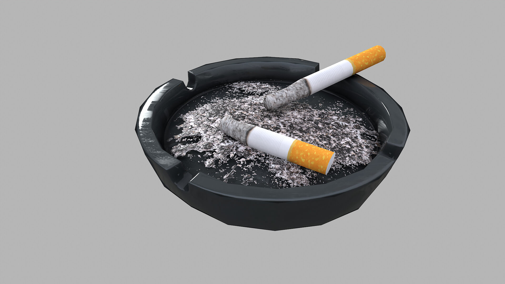

The metallic ashtray is a sleek and durable smoking accessory that adds a touch of sophistication to any space. Crafted from high-quality metals such as stainless steel or aluminum, these ashtrays offer excellent resistance to heat and stains. With their stylish designs and easy-to-clean surfaces, metallic ashtrays are not only functional but also aesthetically pleasing. Whether for indoor use or outdoor gatherings, they provide a reliable and elegant solution for safely disposing of cigarette butts and ash.An ashtray is a small container designed to hold and dispose of ash and cigarette butts. It has been a common smoking accessory for decades, used in homes, public spaces, and establishments. Ashtrays come in various materials, such as metal, glass, ceramic, and plastic, and often feature decorative designs. They provide a convenient and tidy way to contain smoking debris, preventing ash from scattering. With the increasing popularity of smoking alternatives and smoking restrictions, the use of traditional ashtrays has declined. However, they remain a nostalgic symbol of an era when smoking was more prevalent in society.

Fintastic Ashtray:
The metallic ashtray is a sleek and durable smoking accessory that adds a touch of sophistication to any space. Crafted from high-quality metals such as stainless steel or aluminum, these ashtrays offer excellent resistance to heat and stains. With their stylish designs and easy-to-clean surfaces, metallic ashtrays are not only functional but also aesthetically pleasing. Whether for indoor use or outdoor gatherings, they provide a reliable and elegant solution for safely disposing of cigarette butts and ash.An ashtray is a small container designed to hold and dispose of ash and cigarette butts. It has been a common smoking accessory for decades, used in homes, public spaces, and establishments. Ashtrays come in various materials, such as metal, glass, ceramic, and plastic, and often feature decorative designs. They provide a convenient and tidy way to contain smoking debris, preventing ash from scattering. With the increasing popularity of smoking alternatives and smoking restrictions, the use of traditional ashtrays has declined. However, they remain a nostalgic symbol of an era when smoking was more prevalent in society.
Portable Ashtray:
The metallic ashtray is a sleek and durable smoking accessory that adds a touch of sophistication to any space. Crafted from high-quality metals such as stainless steel or aluminum, these ashtrays offer excellent resistance to heat and stains. With their stylish designs and easy-to-clean surfaces, metallic ashtrays are not only functional but also aesthetically pleasing. Whether for indoor use or outdoor gatherings, they provide a reliable and elegant solution for safely disposing of cigarette butts and ash.An ashtray is a small container designed to hold and dispose of ash and cigarette butts. It has been a common smoking accessory for decades, used in homes, public spaces, and establishments. Ashtrays come in various materials, such as metal, glass, ceramic, and plastic, and often feature decorative designs. They provide a convenient and tidy way to contain smoking debris, preventing ash from scattering. With the increasing popularity of smoking alternatives and smoking restrictions, the use of traditional ashtrays has declined. However, they remain a nostalgic symbol of an era when smoking was more prevalent in society.

Plastic Ashtray:
The metallic ashtray is a sleek and durable smoking accessory that adds a touch of sophistication to any space. Crafted from high-quality metals such as stainless steel or aluminum, these ashtrays offer excellent resistance to heat and stains. With their stylish designs and easy-to-clean surfaces, metallic ashtrays are not only functional but also aesthetically pleasing. Whether for indoor use or outdoor gatherings, they provide a reliable and elegant solution for safely disposing of cigarette butts and ash.An ashtray is a small container designed to hold and dispose of ash and cigarette butts. It has been a common smoking accessory for decades, used in homes, public spaces, and establishments. Ashtrays come in various materials, such as metal, glass, ceramic, and plastic, and often feature decorative designs. They provide a convenient and tidy way to contain smoking debris, preventing ash from scattering. With the increasing popularity of smoking alternatives and smoking restrictions, the use of traditional ashtrays has declined. However, they remain a nostalgic symbol of an era when smoking was more prevalent in society.